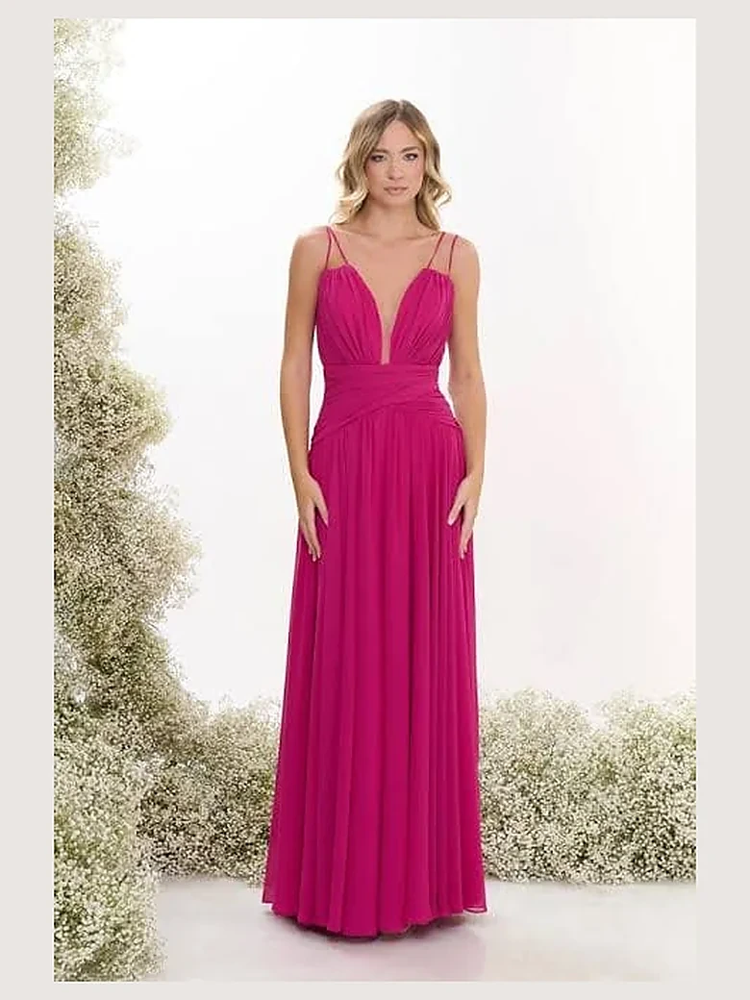
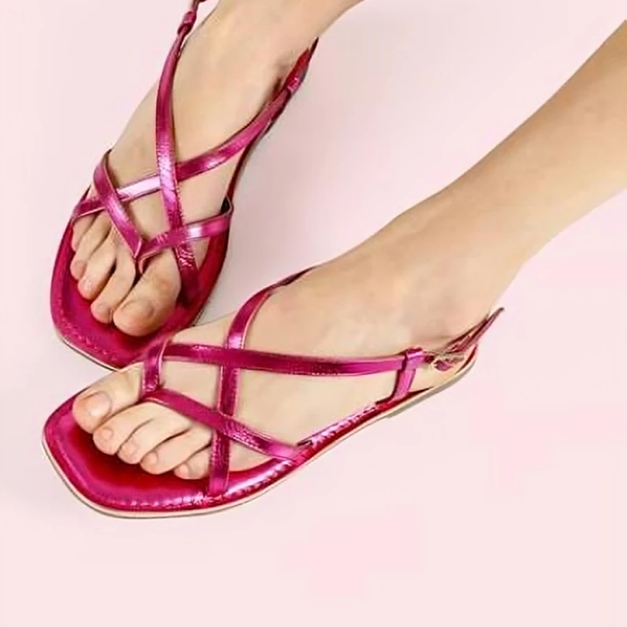
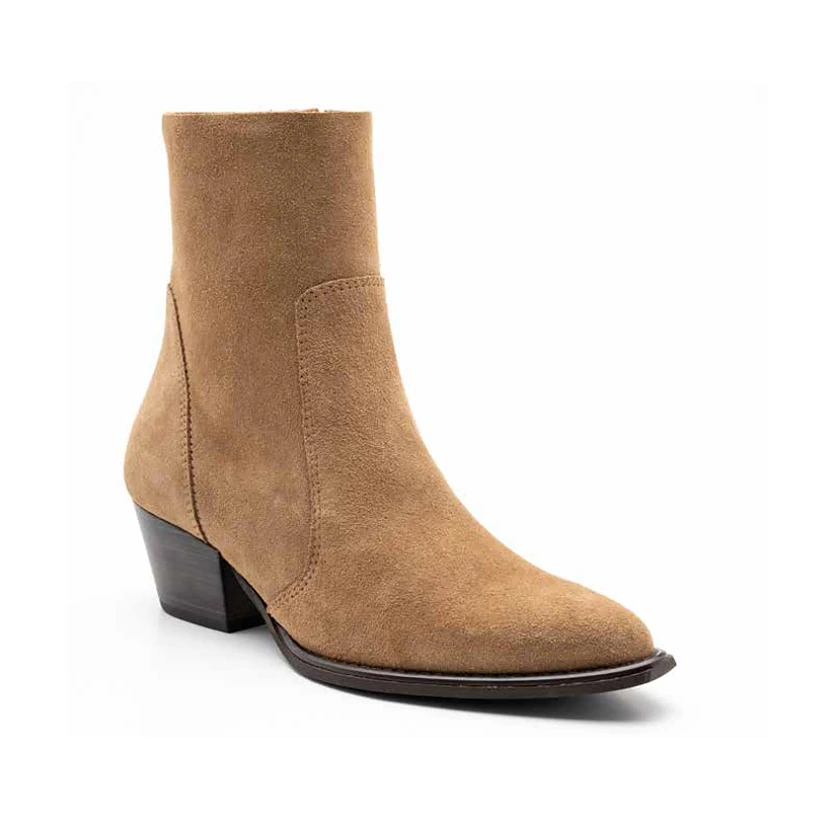
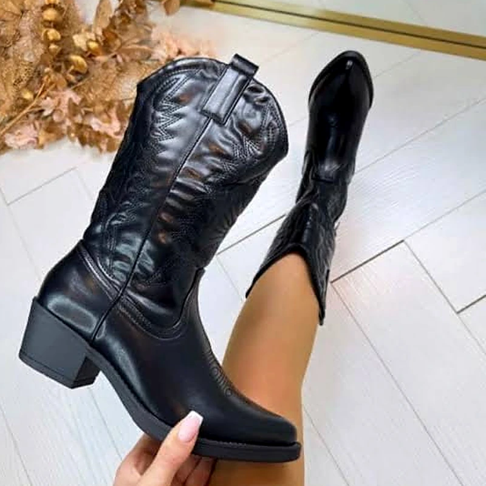

Scarpe e abbigliamento a Lido degli Scacchi, dal 27 marzo 2027
Sandali, stivaletti, texani e abiti da donna.
Via Adamello 10, sulla via principale del mare.
Guarda i modelli e chiedi la tua misura su WhatsApp.



-
Rispondiamo su WhatsAppCi siamo noi due
-
Ti aiutiamo a scegliere la misuraPrima di ordinare
-
Il campionario lo scegliamo noiUno per uno, ogni stagione
Quello che trovi in negozio
Ogni stagione scegliamo i modelli che vanno di più.
- Sandali
- Stivaletti
- Texani
- Abiti da donna
Filtra per categoria e vedi solo quello che cerchi.
Filtra per categoria
In questa categoria non c'è ancora niente. Guarda le altre.
Si guarda qui, si scrive su WhatsApp
-
1
Scegli il modello e la tua misura.
-
2
Tocca «Richiedi prodotto»: WhatsApp si apre già scritto.
-
3
Ti rispondiamo se c'è, e come averlo.
Dall'altra parte non c'è un centralino: ci siamo noi due.
Non sai che numero prendere?
Ogni modello calza in modo diverso.
Dicci il numero che porti di solito e con quale scarpa ti trovi bene.
Ti diciamo noi quale misura ordinare.
Da dove arrivano le scarpe che vendiamo
La maggior parte dei modelli arriva da calzaturifici italiani.
Il campionario lo scegliamo noi, uno per uno, prima di ogni stagione.

Non solo scarpe: anche l'abito
Abiti corti e lunghi, per tutti i giorni e per le occasioni.
Il reparto apre insieme al negozio.
Chiedi taglie e modelli in chat, come per le scarpe.
Il negozio
- A gennaio prendiamo le chiavi e cambiamo i locali da capo.
- Fuori arriva l'insegna nuova, quella del logo.
- A marzo il negozio riapre con un altro nome e un'altra faccia.
Perché «Mezzo Metro di Tacco»
Mezzo metro sono cinquanta centimetri di tacco: un'esagerazione, e lo sappiamo.
Il nome ce lo siamo scelto che non l'avesse nessun altro.
Cercalo su Google: trovi solo noi.
Chi siamo
Siamo Johnny e Claudia, 45 anni tutti e due.
Riapriamo un negozio che sta su questa via da oltre quarant'anni.
Domande frequenti
Sabato 27 marzo 2027, dalle 10:00 alle 23:00.
Sì, in negozio, in via Adamello 10 al Lido degli Scacchi.
Sì. Scrivi su WhatsApp: costi e tempi te li diciamo prima di ordinare.
In negozio ciabatte e infradito da mare. Il catalogo online è da donna.
Chiedilo in chat. Ti rispondiamo modello per modello.
Sta su questa via da oltre quarant'anni. Da marzo cambia nome e gestione.
No. In negozio c'è di più: online mettiamo i modelli che vanno di più.
Inaugurazione sabato 27 marzo 2027
Dalle 10:00 alle 23:00, in via Adamello 10.
Sconto per chi compra quel giorno, e un buffet aperto a tutti.
Via Adamello 10, sulla via del mare
Via Adamello 10 — Lido degli Scacchi, Comacchio (FE).
Sulla via principale del mare.
- Scrivi su WhatsApp al 340 873 7943.